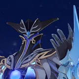

Chương I · Màn IV
Chúng Ta Ắt Sẽ Trùng Phùng
Nhiệm vụ Ma Thần — Mondstadt và Liyue
Nhân vật xuất hiện
 Nhân vật chính · Nhà Lữ HànhLumineNhà Lữ Hành đến từ thế giới khác. Bị vị thần lạ mặt phong ấn và cướp mất người anh song sinh, cô bắt đầu hành trình đi tìm Bảy Vị Thần của Teyvat.
Nhân vật chính · Nhà Lữ HànhLumineNhà Lữ Hành đến từ thế giới khác. Bị vị thần lạ mặt phong ấn và cướp mất người anh song sinh, cô bắt đầu hành trình đi tìm Bảy Vị Thần của Teyvat. Bạn đồng hànhPaimonĐược Lumine cứu khỏi chết đuối hai tháng trước, Paimon tự nhận làm người dẫn đường cho cô. Hay ăn, hay nói, và rất ghét bị gọi là “thực phẩm dự trữ”.
Bạn đồng hànhPaimonĐược Lumine cứu khỏi chết đuối hai tháng trước, Paimon tự nhận làm người dẫn đường cho cô. Hay ăn, hay nói, và rất ghét bị gọi là “thực phẩm dự trữ”. “Kiếm Sĩ Hoàng Hôn” của Khaenri'ahDainsleifCùng Lumine truy tìm Sứ Đồ Vực Sâu và phá kế hoạch “lay chuyển thần tọa”. Theo lời Aether, anh là hộ vệ cung đình Khaenri'ah đời cuối, mang lời nguyền bất tử.
“Kiếm Sĩ Hoàng Hôn” của Khaenri'ahDainsleifCùng Lumine truy tìm Sứ Đồ Vực Sâu và phá kế hoạch “lay chuyển thần tọa”. Theo lời Aether, anh là hộ vệ cung đình Khaenri'ah đời cuối, mang lời nguyền bất tử. Thư ký của Thất Tinh LiyueGanyuTreo ủy thác ở hiệp hội vì lo lắng Đạo Bảo Đoàn động vào di tích của Giáo Đoàn Vực Sâu.
Thư ký của Thất Tinh LiyueGanyuTreo ủy thác ở hiệp hội vì lo lắng Đạo Bảo Đoàn động vào di tích của Giáo Đoàn Vực Sâu.- LHiệp Hội Nhà Mạo Hiểm LiyueLanCùng Ganyu kể cho Lumine về “Nam Trưởng Tỷ”, “Bắc Quái Điểu” và “Trùm Đạo Bảo”.

Giáo Đoàn Vực SâuSứ Đồ Vực SâuThống lĩnh của Pháp Sư Vực Sâu, kẻ đứng sau kế hoạch “Máy dệt vận mệnh”. Gọi Aether là “Hoàng tử điện hạ”.- Mục sư tế lễ · Giáo hội Tây PhongBarbaraKể chuyện “Thất Thiên Thần Tượng mất tích” và “oán hận của bạo quân”.
- Nữ tu Giáo Hội Tây PhongRosariaBáo tin Giáo Đoàn Vực Sâu tập họp ở Lang Lãnh.
 Đội Trưởng Đại Diện · Đội Kỵ Sĩ Tây PhongJeanDẫn quân đối phó Giáo Đoàn Vực Sâu ở Lang Lãnh, nhờ Lumine đi xem Vua Sói có gặp nguy hiểm không.
Đội Trưởng Đại Diện · Đội Kỵ Sĩ Tây PhongJeanDẫn quân đối phó Giáo Đoàn Vực Sâu ở Lang Lãnh, nhờ Lumine đi xem Vua Sói có gặp nguy hiểm không. Thiếu niên của bầy sóiRazorBảo vệ linh hồn Vua Sói Bắc Phong trước nghi thức của Sứ Đồ Vực Sâu.
Thiếu niên của bầy sóiRazorBảo vệ linh hồn Vua Sói Bắc Phong trước nghi thức của Sứ Đồ Vực Sâu. Linh hồn Ma Thần Andrius · BoreasVua Sói Bắc PhongChủ nhân Lang Lãnh. Kể về cỗ máy từng xông vào bãi tập luyện của mình — manh mối về “máy cày đầu tiên của thế giới”.
Linh hồn Ma Thần Andrius · BoreasVua Sói Bắc PhongChủ nhân Lang Lãnh. Kể về cỗ máy từng xông vào bãi tập luyện của mình — manh mối về “máy cày đầu tiên của thế giới”. Anh trai song sinh của Lumine · “Hoàng tử điện hạ”AetherXuất hiện bên cạnh Sứ Đồ Vực Sâu, gọi Dainsleif là kẻ thù và hẹn với Lumine: “Chúng ta ắt sẽ trùng phùng.”
Anh trai song sinh của Lumine · “Hoàng tử điện hạ”AetherXuất hiện bên cạnh Sứ Đồ Vực Sâu, gọi Dainsleif là kẻ thù và hẹn với Lumine: “Chúng ta ắt sẽ trùng phùng.”
Các phần
- Phần 1Hiến Tế Không Tự Nguyện
- Phần 2Sứ Đồ Của Kẻ Bất Tín
- Phần 3Thí Luyện Không Vinh Quang
- Phần 4Linh Hồn Ngăn Cách
Toàn bộ lời thoại được lấy từ bản tiếng Việt chính thức của trò chơi. Ở những đoạn người chơi được chọn câu trả lời, truyện chọn một lựa chọn duy nhất.